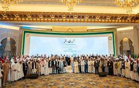

Saudi arabia is home to many leading universities, research institutions, and tech organizations. The country’s robust ecosystem and commitment to advancement make it foster breakthrough innovations across various fields. Thus, the destination attracts scholars, academicians, scholars, and professionals from all corners of the world to attend conferences in Saudi arabia 2023-2024. These international conferences are meant to facilitate knowledge exchange and networking among global experts, research scholars, and students. They provide a valuable platform for professionals to share insights, engage in insightful discussions, and present research findings, leveraging the country's impressively diverse academic and professional sectors. You are sure to find a suitable Saudi arabia conference 2023-2024 in the field of your interest as the country hosts events in various disciplines, from engineering and mathematics to education, nursing, and medicines. In addition, the country boasts cultural diversity, making it an appealing destination for visitors from diverse backgrounds. Conferences are often hosted in major cities, providing amenities and accessibility catering to international participants. Over the years, the country has hosted many successful international conferences across various disciplines. Their proven track record defines its reputation as a preferred destination for organizing such events. So, if you are looking for international conferences in Saudi arabia 2023-2024 with invitation letter, check out our list of all the upcoming events in the country.
Saudi arabia is home to many leading universities, research institutions, and tech organizations. The country’s robust ecosystem and commitment to advancement make it foster breakthrough innovations across various fields. Thus, the destination attracts scholars, academicians, scholars, and professionals from all corners of the world to attend conferences in Saudi arabia 2023-2024. These international conferences are meant to facilitate knowledge exchange and networking among global experts, research scholars, and students. They provide a valuable platform for professionals to share insights, engage in insightful discussions, and present research findings, leveraging the country's impressively diverse academic and professional sectors. You are sure to find a suitable Saudi arabia conference 2023-2024 in the field of your interest as the country hosts events in various disciplines, from engineering and mathematics to education, nursing, and medicines. In addition, the country boasts cultural diversity, making it an appealing destination for visitors from diverse backgrounds. Conferences are often hosted in major cities, providing amenities and accessibility catering to international participants. Over the years, the country has hosted many successful international conferences across various disciplines. Their proven track record defines its reputation as a preferred destination for organizing such events. So, if you are looking for international conferences in Saudi arabia 2023-2024 with invitation letter, check out our list of all the upcoming events in the country.
 Upcoming Conferences in Saudi Arabia